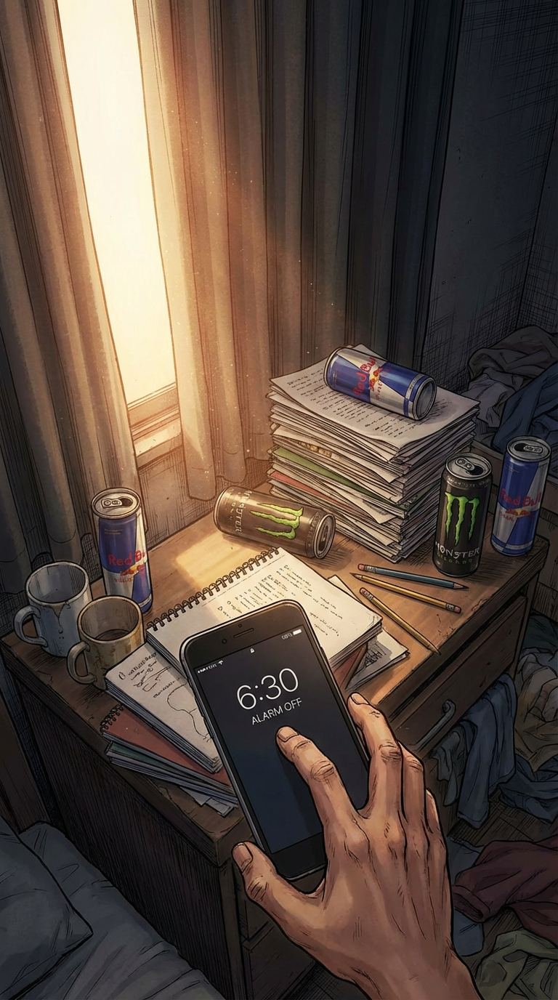
2026年3月26日，清晨6:30。
闹钟响的那一刻，我就知道今天要么改变一切，要么失去一切。
星辰AI的账上还剩47万。按现在的烧钱速度，还能撑83天。
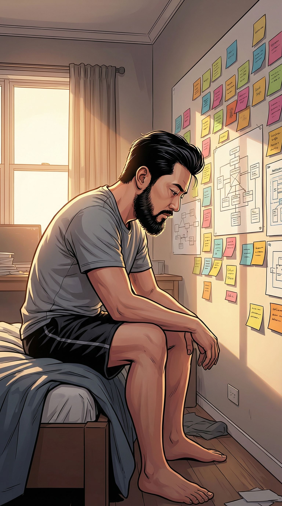
红杉资本，A轮路演。林薇亲自约的。
上一次有投资人主动约我，还是三年前。那次我拿到了种子轮。
这次不一样。这次如果拿不到，星辰AI就死了。
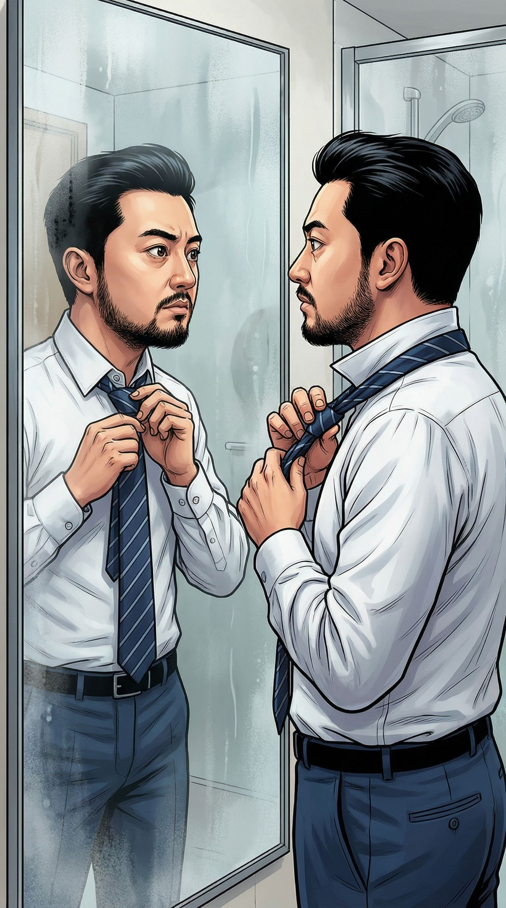
我看着镜子里的自己——络腮胡修了三次还是不整齐，衬衫领口紧得像套了个圈。
"你穿西装像程序员cos商务人士。"
他说得对。但投资人不会投给一个穿帽衫的人。至少不会投第一次见面的。
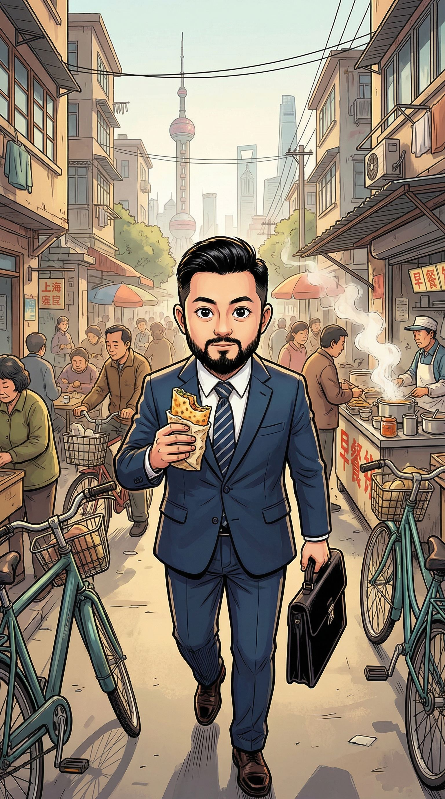
煎饼果子六块钱。我在心里默默换算了一下——这是公司现金流的0.0013%。
创业者的职业病：看什么都换算成burn rate。
"demo最终版。昨晚又改了三轮，API响应时间压到了200ms以内。"
老陈把U盘递给我，眼镜上还有昨晚熬夜留下的雾气。
"睡了几个小时？"
"算上地铁上眯的那二十分钟，大概三小时。"
我没说话。把U盘攥紧了。
这个U盘里装着的，是我们五个人两年的命。
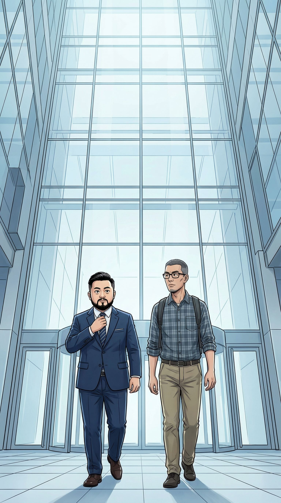
红杉资本的办公室在陆家嘴，42层。
电梯往上的每一秒，我都在默念pitch的开场白。
"各位好，我是星辰AI创始人朱江——"
不对，太普通了。
"在座各位上一次被AI内容惊艳到，是什么时候？"
也不对，太装了。
林薇。红杉中国合伙人，AI赛道负责人。
她看人的眼神像在做CT扫描——30秒内就能判断你是不是在吹牛。
据说她去年否了200个项目，投了3个。3个都上了市。
"开始吧。"
前十分钟，一切按计划进行。
市场规模，技术壁垒，团队背景，竞品分析——每一页都练了不下二十遍。
林薇偶尔点头。她旁边的投资经理在做笔记。
我开始觉得，也许今天真的能成。
"现在，让我展示一下我们的核心产品——"
我按下了播放键。
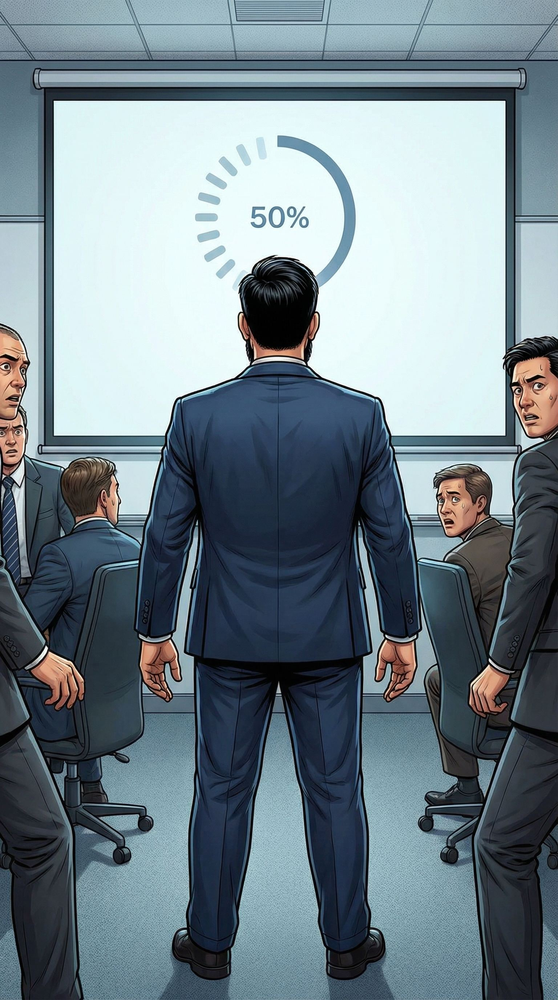
转圈。
加载50%……50%……50%……
我的心跳从正常的72骤然飙到150。手心瞬间湿透。
"呃，网络可能有点问题，我——"
我看向老陈。老陈的脸已经白了。
林薇放下了笔。
这个动作很轻。但在那一刻，我觉得整个会议室的温度降了十度。
放下笔 = 失去兴趣。每个创业者都知道这个信号。
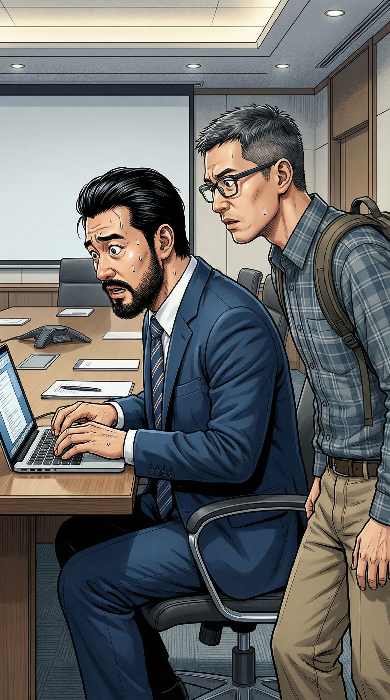
接下来的二十分钟是我创业生涯最漫长的二十分钟。
本地demo跑起来了——但比预期慢了三倍。生成一段30秒视频用了4分钟。
4分钟的沉默。
林薇看了两次手表。
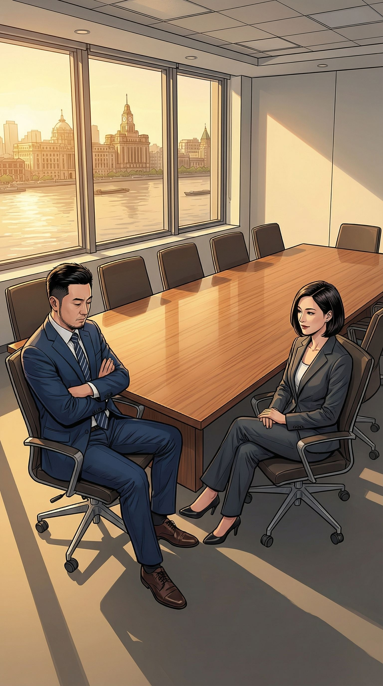
"朱总，技术方向很有意思。但目前阶段……"
她的"但"字拖了半秒。
创业者听到的"但"和普通人听到的不一样。普通人的"但"是转折，创业者的"但"是死刑。
"……我们可能需要看到更成熟的产品数据再做决定。"
翻译：不投了。
我们沉默地走出大楼。
"API那个bug是今早才出的，昨晚测的时候——"
"不是你的问题。"
不是bug的问题。不是网络的问题。不是PPT的问题。
是我。是我不够好。
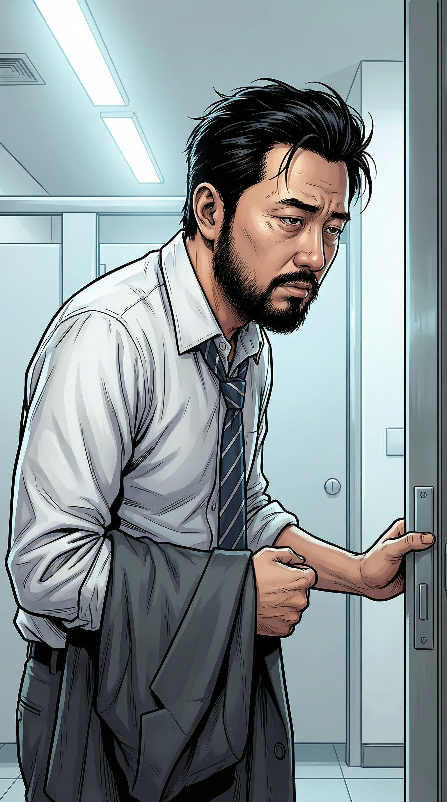
我让老陈先走。
然后走进商场一楼的洗手间，锁上门。
两只手撑在洗手台上，看着镜子里那个穿皱了的西装的人。
47万。83天。
一次机会。用完了。
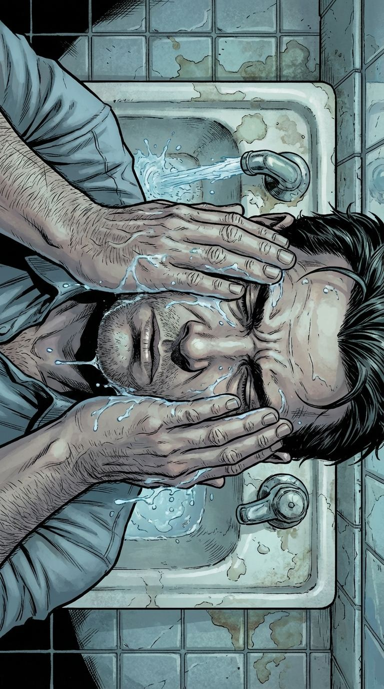
水很凉。我把脸埋进去，想让大脑重启。
然后——
世界停了。
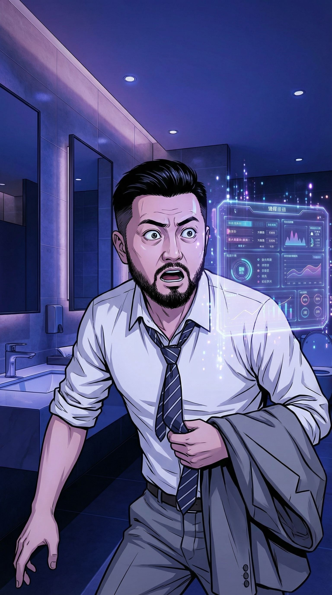
一个半透明的面板凭空出现在我眼前。
我盯着这个面板看了整整十秒。
然后用手穿过了它——手指直接穿透，面板纹丝不动。
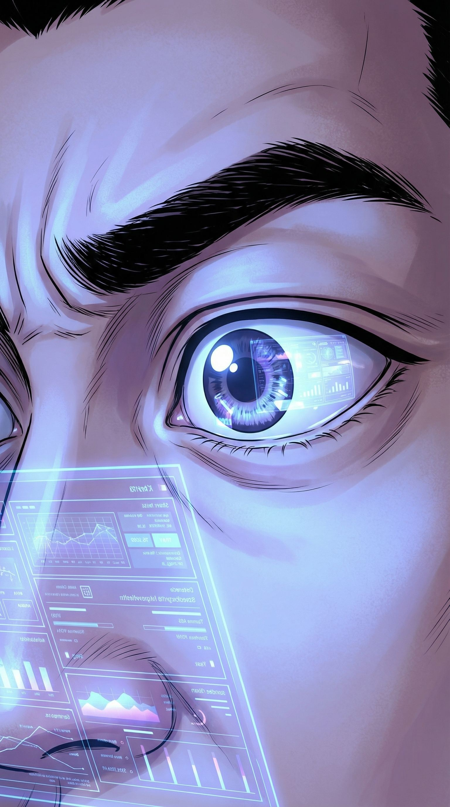
12分。满分100，我拿了12分。
说实话，比我自己的预期还低。
但——7次循环。如果每次进步13分……
不对。我是创业者。我不做线性增长的假设。
"系统，这个路演评分的12分，能拆解成维度吗？"
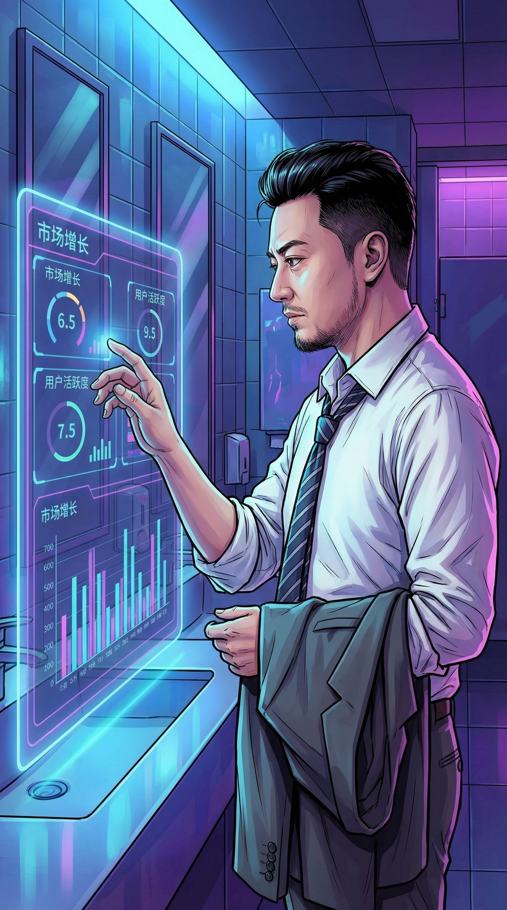
我差点笑出来。创始人气场负四分。
但"团队信任度"那一栏让我愣住了——投资人对老陈有疑虑？老陈是最稳的人啊。
这里面有我不知道的东西。
系统提示：循环即将开始。请选择第二次循环策略：
我想了五秒。
创业三年教会我一件事：当一个方案得了12分，你不该修补，你该推翻。
修补只能从12变成30。推翻才有可能到90。
→ 我选B。
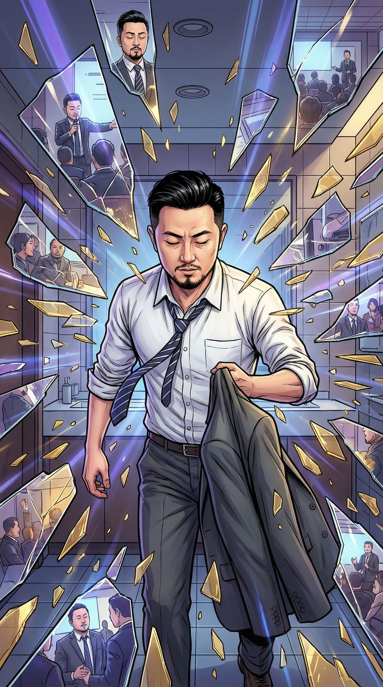
世界碎了。
不是比喻。我看着洗手间的瓷砖、灯光、镜子，像玻璃一样裂开，碎片中闪过今天所有的画面——煎饼果子、地铁、电梯、loading转圈、林薇放下的笔。
然后碎片重新拼合。
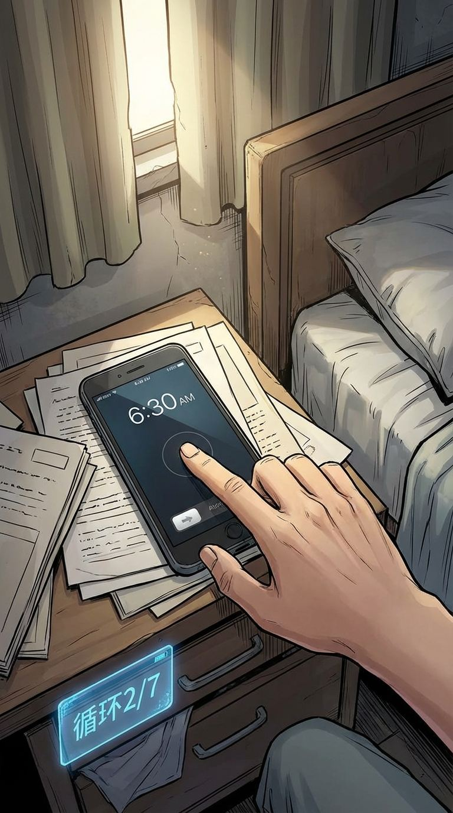
2026年3月26日，清晨6:30。
同一个闹钟。同一个房间。同一缕晨光。
但我记得一切。
这一次，我不穿西装了。
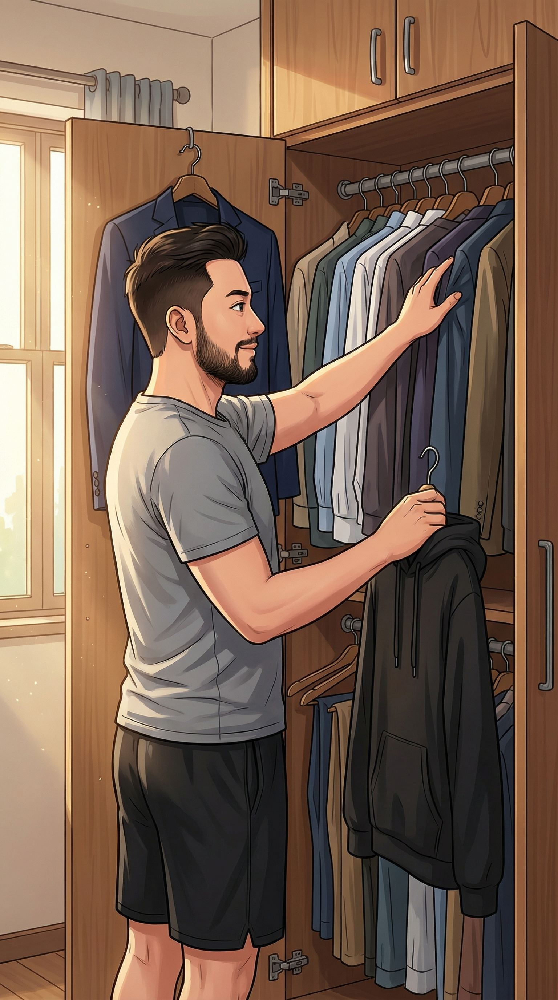
上辈子——不对，上个循环——我穿西装得了负4分的"创始人气场"。
老陈说我穿西装像程序员cos商务人士。
好吧。那我就当个真实的程序员。
黑色帽衫，牛仔裤，白色运动鞋。这才是我。
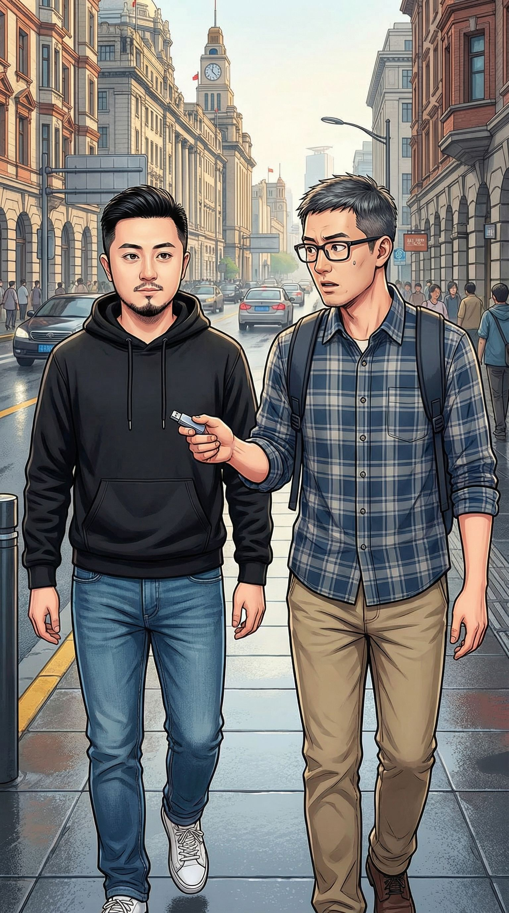
"你不穿西装了？"
"不穿了。林薇投的三个项目创始人，你去搜搜他们路演穿什么。"
老陈想了想："好像……都是休闲装。"
"投资人投的不是你的衣服，是你的产品和你这个人。而我穿西装，不像我这个人。"
我没告诉他这个结论的来源。
系统提示：是否使用技能点调查老陈的离职背景？
老陈是我最信任的人。但"团队信任度3/25"那个数据一直卡在我脑子里。
我需要知道投资人在担心什么——不是因为我不信任老陈，而是因为我得替老陈回应那些他自己不知道的质疑。
→ 我选A。不是为了窥探，是为了保护。
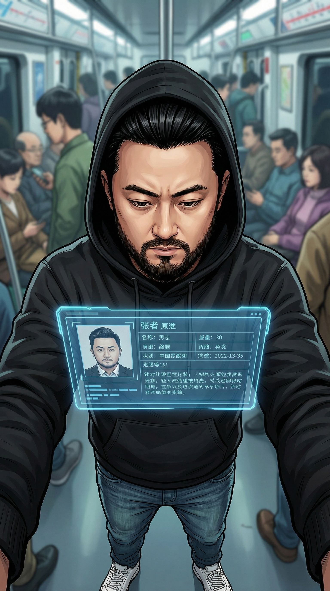
我盯着"股权8%"那一行，心里咯噔了一下。
这不是老陈的问题，是我的问题。是我当初给少了。
同一个会议室。同一个林薇。
但这一次，我没有打开PPT。
"林总，PPT我准备了但今天不用。我直接给您看产品。"
林薇挑了一下眉。
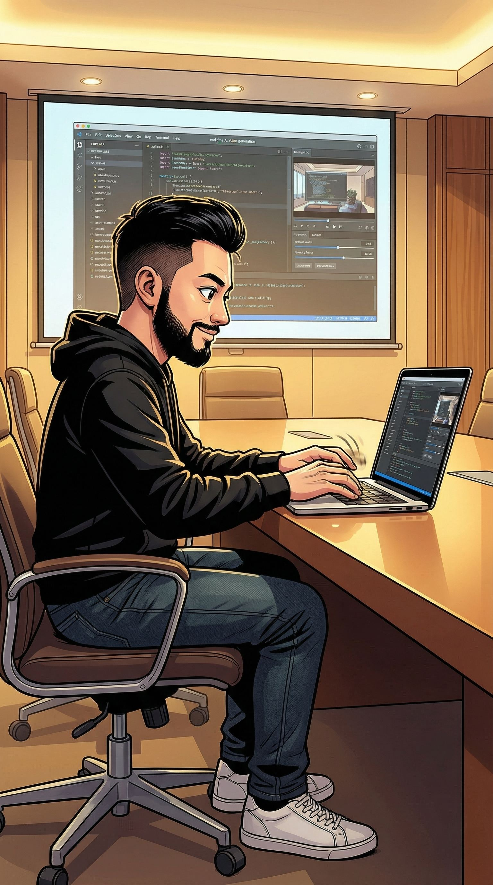
这一次我做了两件不同的事：
第一，产品跑在本地。没有网络，没有API调用，没有loading转圈。
第二，我没有按脚本走。我让林薇自己选一个主题——"您随便说个短视频主题，我现场生成。"
"就做一个……上海弄堂里的猫。"
90秒后，一段完整的30秒视频出现在屏幕上。弄堂光影、猫的动作、配乐——全是AI生成的。
会议室安静了三秒。那三秒比上个循环的四分钟loading还要长。
林薇没有放下笔。
她开始记笔记。
从12到41。还不够，但方向对了。
路演进行到团队介绍环节。我知道接下来林薇会问老陈的离职原因。
上个循环里，林薇问了这个问题。老陈支支吾吾说"理念不合"，团队信任度直接垮了。
创业者有一个直觉——最危险的问题，要自己先说。因为你先说的时候，你掌握叙事权。等别人问你，你就在被审判。
→ 我选A。
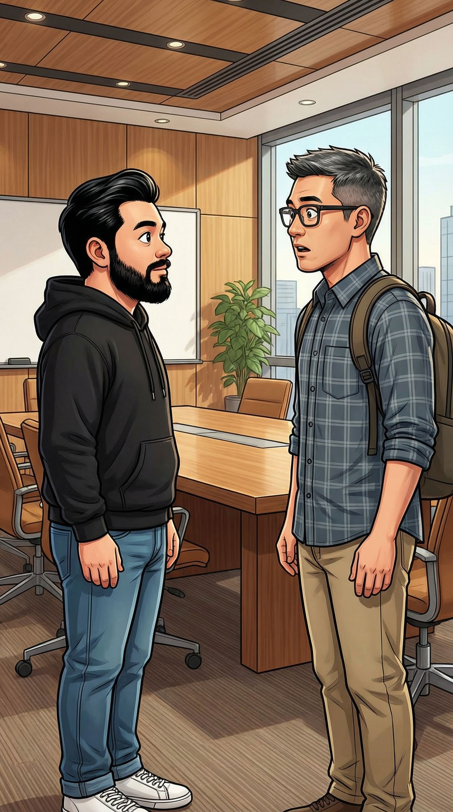
"林总，在您问之前，我想主动说一件事。"
林薇停下笔，看着我。
"我们CTO陈启明，离开前公司不是因为不好管理。是因为他坚持用户数据最小化原则，和公司的商业化方向冲突。一个为了原则放弃P9待遇的技术人——这正是我需要的CTO。"
我停顿了一秒。
"另外，从下个月起，老陈的股份从8%调整到15%。他值这个价。"
老陈转头看我，眼睛瞪得很大。
他不知道我为什么突然说这个。但他知道我说的是真的。
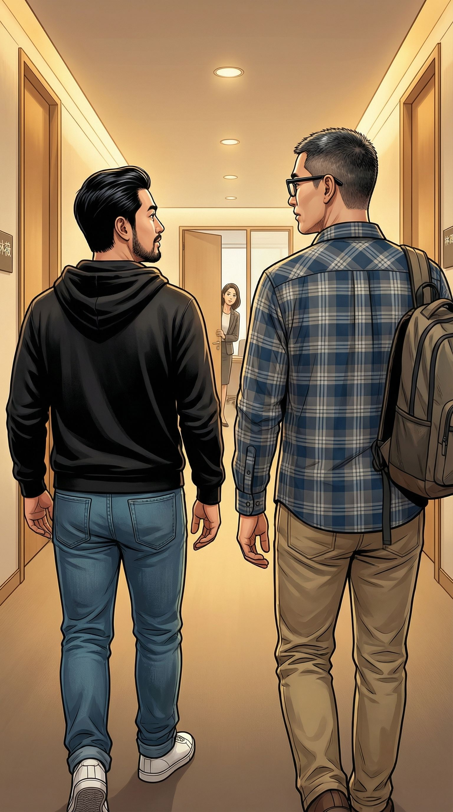
路演结束。这一次林薇没有说"但"。
"我需要再看一些数据。下周能再聊一次吗？"
这不是"不投"，也不是"投"。是"再看看"。
"当然，随时。"
我们走出会议室。我在心里默默计算：还剩6次循环。
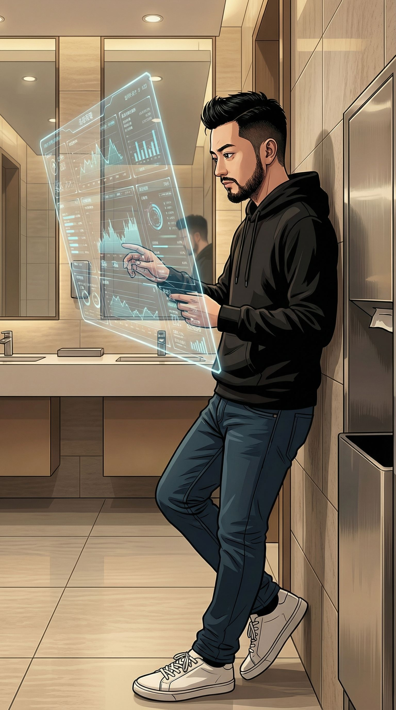
从12到58，进步不小。但58分还是不及格。
更重要的是——"市场叙事"那个维度，两次循环一分没涨。
这意味着我的市场故事本身就有问题。
6次机会。
58分离及格还差一大截。但我已经知道方向了。
第一次循环教会我：产品好坏比穿什么重要。
第二次循环教会我：主动暴露弱点比等人拆穿强。
这不就是创业吗？
每一次失败都是一次免费的用户测试。每一次pivot都是往产品市场匹配靠近一步。
只不过以前我没有"重来"的机会。现在有了。
我要把这个路演打到100分。
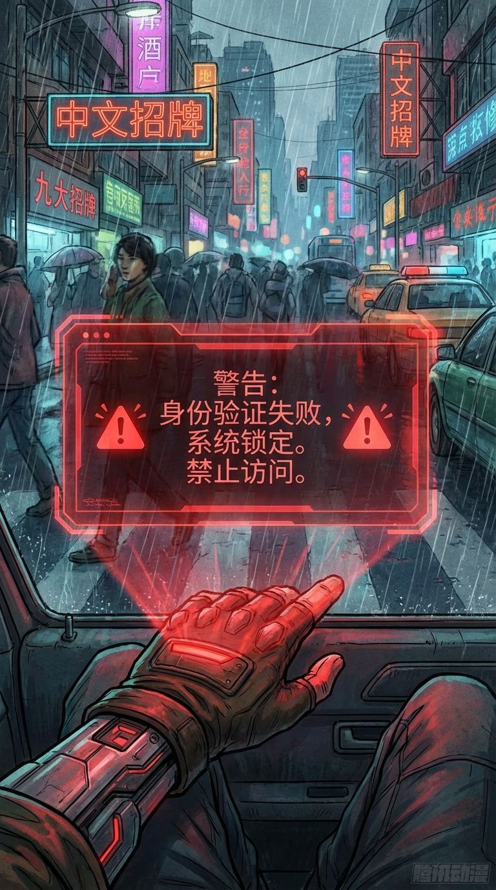
就在我准备触发下一次循环时，系统突然弹出一个从未见过的红色警告：
……什么？
红杉资本里面，还有一个和我一样在循环的人？